Graph Foundations - Module 4 (Diamond Inheritance)
Lecture - 28
Graph Foundations - Module 4 (Diamond Inheritance)
(Refer Slide Time: 0:11)

Welcome to the final module of the fifth week in Getting Started with Competitive Programming. So, we continue to look at the applications of graph traversals specifically BFS DFS, and our final example is going to be a problem called Diamond Inheritance. This appeared in Round 1C of the 2012 edition of Google Code Jam.
And one of the reasons we picked this problem was because it gives us an opportunity to work with directed graphs, which I think is interesting. It is good to know that the traversals work out pretty much the same when you are working with directed graphs. But there are also some subtleties that crop up and that are good to be aware of. So, alright, let us get started by looking at the problem statement.
(Refer Slide Time: 00:56)
 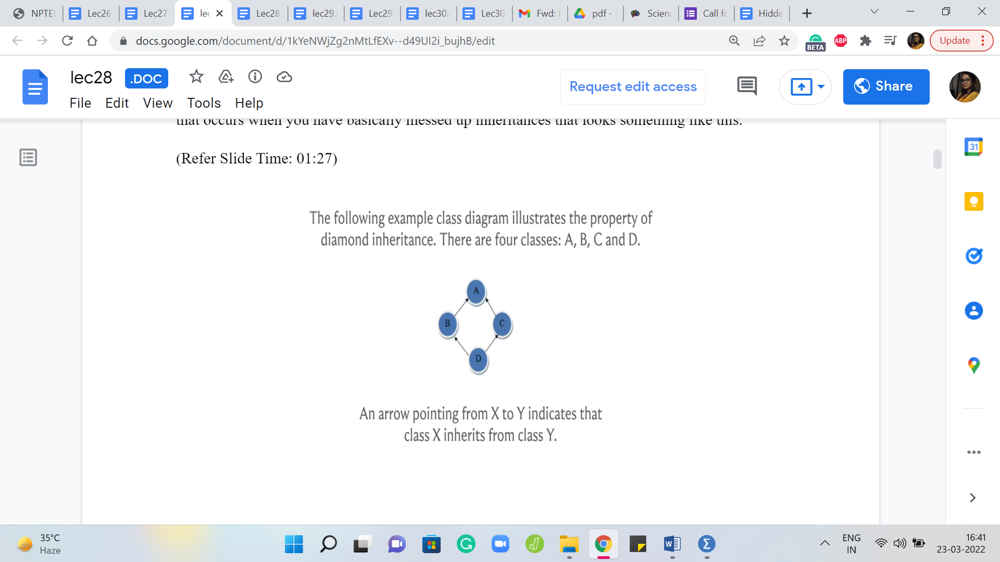
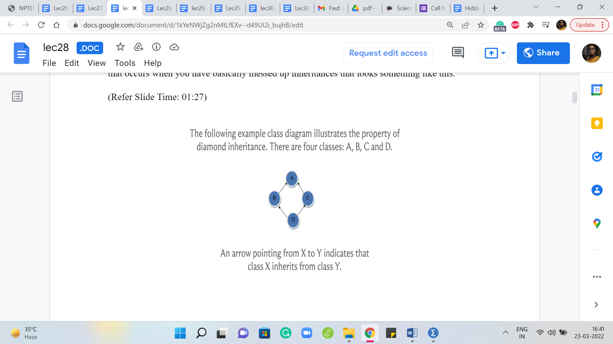
We are told that we need to help diagnose class diagrams to identify instances of diamond inheritance. Now, if you have done object-oriented programming, you might have already encountered this phrase, Diamond inheritance. Some places would more colorfully call it the deadly diamond of death. And the reason is that this is essentially an instance of an ambiguity that occurs when you have basically messed up inheritances that look something like this.
So, if you have not done any object-oriented programming, and all of this sounds strange, then do not worry about it. But for those who are familiar with notions of inheritance in that context, basically, suppose you have four classes with two classes inheriting from a common class. So, let us say for instance, that B and C inherit from A and then class D inherits from both B and C. That is also the diagrammatic notation here.
So, we see that an arrow pointing from X to Y, for example, from D to C indicates that D inherits from B. So, we have that D inherited from B and C, and B and C inherited from A. So, suppose you have a method in class A that is overwritten differently by B and C, then when D inherits from B and C, what version should it use? It becomes somewhat ambiguous. And this is why you are probably interested in knowing if you land up in this sort of situation.
Now, if the class and method kind of terminology does not make sense, then do not worry about it. You could just think of this as a situation where you have four nodes or vertices. And wherever they are connected in this very particular way, then we say that we have an instance of diamond inheritance. And this is what we are required to detect. But it does not have to be just four vertices. So in the problem statement, they go on to tell us what exactly we are looking for in slightly more formal, more precise terms.
(Refer Slide Time: 03:08)

So, let us take a look at what we really mean when we want to say that there is diamond inheritance. So, first, let us talk about an inheritance path. So, an inheritance path from X to Y is defined as a sequence of classes, X, C1, C2, and so on up to Cn and then followed by Y, where X inherits from C1, Ci inherits from Ci + 1 for all ‘i’ between 1 and n - 1. And finally, Cn inherits from Y.
So, this might remind you of the notion of a path that we talked about when we were discussing the notion of connectivity in the second module. And there a path was simply a sequence of vertices, such that every pair of consecutive vertices has had an edge between them.
And now this is pretty much the same idea. You would just have to think of your classes as being vertices of a directed graph, and you add an edge between two vertices if the corresponding classes are such that one inherits from another, and you make sure that the orientation respects the direction of the inheritance.
Now in this graph, an inheritance path is simply a sequence of vertices so that the consecutive vertices have a directed edge going between them connecting the vertex that appears earlier in the sequence with the vertex that appears later in the sequence. So, you can map this notion of an inheritance path as applied to classes to a directed path in the graph that you derive from these classes.
(Refer Slide Time: 04:44)

So, we say that a class diagram has a diamond inheritance if there exists a pair of classes X and Y, such that there are at least two different inheritance paths from X to Y. That is the definition of a diamond inheritance. So, essentially, it does not have to be literally a diamond on four classes, it could be a longer chain in some sense. But as long as you have two classes X and Y so that there are two different paths from X to Y, then you have an instance of diamond inheritance.
In the language of graphs, essentially, you are looking for two vertices, X and Y so that there are two different paths that connect X and Y. And these are paths in this directed graph. So, just to make sure that we are on the same page, let us actually take a look at one of the examples given in the sample input.
(Refer Slide Time: 05:36)
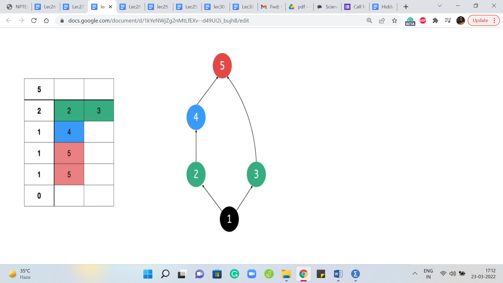
So, the format of the sample input is such that the first line tells you how many classes there are. So, in this case, there are five classes. And then this is followed by as many lines as there are classes. So, you can see that you have five lines. On the ‘i’th line, the first number tells you how many classes does the ’class i’ inherit from. So, for example, the first class here inherits from two other classes.
And then the next two numbers on that line tell you the IDs of the two classes, or in general, there is going to be as many numbers as there are classes that you inherit from. And each of these would correspond to the IDs of the classes that you inherit from. So, that was a bit of a mouthful. So, let us just walk through this example. We see that the first class inherits from 2 and 3, so we have those arrows there to the classes 2, and 3.
The second line corresponding to the second class has just one inheritance, and that is from class 4. So, we have an arrow from 2 to 4. And then the third line corresponding to the third class again has one inheritance. And that is from class 5. And then we have the fourth class also inheriting from 5 and 5 has no inheritances. So, 5 does not have any edges going out of it. So, what sort of an instance is this?
Does this have ‘diamond inheritance’ or does it not? Well, I mean, you may not see a direct diamond on four vertices. But as we said before, it could be a more indirect diamond structure. So, if you can spot that diamond structure, then you would say the answer is yes. Otherwise, you would probably not be so sure. So, if you need a moment here, please feel free to pause and ponder for a second before you commit your answer.
Alright, so you can probably see here that there are choices of X and Y for which we can say that there are two distinct paths between X and Y going from X to Y. So, let us say that X, for instance, is 1, and Y is 5. So, you have the path 1 2 4 5 on the one hand, and then 1 3 5 on the other. So, these are two paths going from X to Y that are different from each other. And that is why you would say that in this case, you do have a diamond inheritance.
Now let us talk a little bit about what does it mean for the two paths between X and Y to be different? I think there are two natural interpretations of the word ‘different’ as given in the problem statement.
(Refer Slide Time: 08:16)
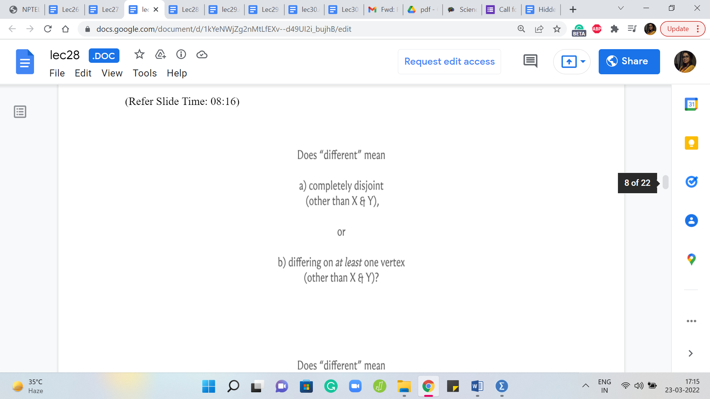 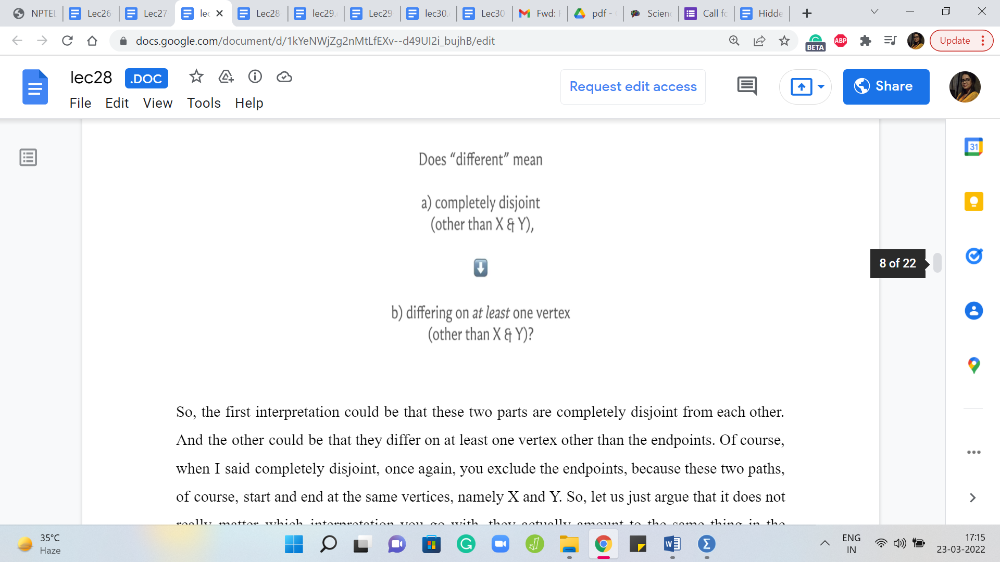
So, the first interpretation could be that these two parts are completely disjoint from each other. And the other could be that they differ on at least one vertex other than the endpoints. Of course, when I said completely disjoint, once again, you exclude the endpoints because these two paths, of course, start and end at the same vertices, namely X and Y. So, let us just argue that it does not really matter which interpretation you go with, they actually amount to the same thing in the following sense.
So, first of all, if you have two paths that happened to be completely disjoint, except for the endpoints, then, of course, you do have two paths that differ on at least one vertex because, well, of course, they differ on all vertices, and there is at least one vertex other than X and Y. So, if you have two paths that are different in the first sense, then they are also different in the second sense.
On the other hand, suppose you have two paths that are different in the second sense, they differ on at least one vertex, then I would argue that you can find X and Y, maybe not necessarily the same X and Y. But you can find, you know, probably a different diamond of the first kind that is different in the stronger sense of being completely disjoint.
(Refer Slide Time: 09:30)

And the way to see this is that well, let us take a look at the two paths that differ on, you know, at least one vertex. So, here are two paths that are overlapping at a couple of vertices, and are at least different in a few places as well. And X and Y are the two red vertices at the extreme ends. So, basically, what you could do is jot down the list of vertices on these two paths that are guaranteed to differ at at-least one vertex, and essentially you pursue these paths simultaneously.
It is possible that the first few vertices are also common. So, you just make a note of the first time that you see two different vertices on the two paths. And then you make a note of the first time that, once again, the paths converge. So, for instance, here, the yellow vertex in the middle is the first time that these two paths end up having a common vertex. And the red vertex is essentially where we started and the paths immediately diverged.
It is possible that after the red vertex, you had a little bit of a common thread for some time, in which case, we would push the red vertex forward until the path began to diverge. And notice that it must diverge at least once because we know that they are different at, at least one vertex. So, in this example, choosing the left red vertex and the yellow vertex in the middle as our new choices for X and Y, we get a diamond inheritance.
In the first sense, we get a pair of paths that are different in the sense that they are completely disjoint, except for the endpoints, just by the way that we chose them. So, it does not really matter which of these definitions you work with. And for the most part, we will try to be looking for paths that are completely disjoint internally apart from X and Y because that is just going to be generally more convenient.
Alright, so how are we going to solve this problem? So, essentially, we are looking for something that looks like a cycle in the underlying undirected graph. But in the oriented sense, it is essentially the union of two paths that start and end at the same vertex. So, well, let us think about performing, for instance, a DFS.
(Refer Slide Time: 11:46 & 12:24)
 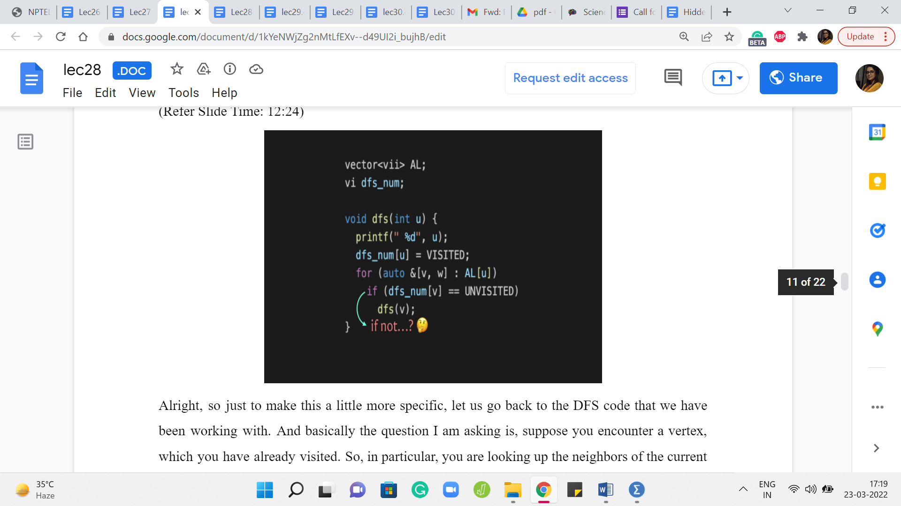
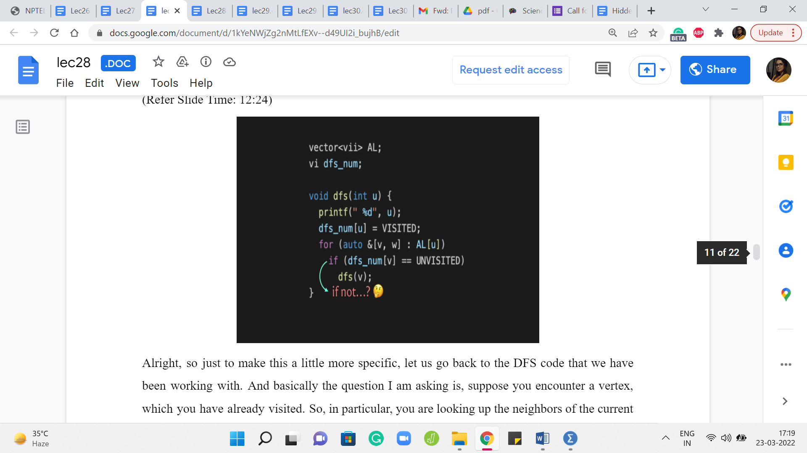
And let us think about what happens when you visit one vertex more than once. Does that tell us something about the potential existence of two different paths? Well, this is meant to be a bit of a hint. So, if you like, please feel free to pause here. And think about if a vertex being visited more than once by, in fact, either a DFS or BFS traversal is something that could help you detect instances of diamond inheritance. Come back once you are ready, and you have given this a thought.
Alright, so just to make this a little more specific, let us go back to the DFS code that we have been working with. And basically, the question I am asking is, suppose you encounter a vertex, which you have already visited. So, in particular, you are looking up the neighbors of the current vertex. And let us say the first neighbor that you find is a vertex that is already been visited before.
So, what does this mean for us? For DFS, of course, it just means that this is a vertex to be avoided. So, it is just going to move on. But for the problem that we are solving right now, this vertex is an interesting vertex because, well, because it was visited, we know that there is already some way of reaching this vertex from the route. And the fact that we are approaching it again, probably means that there was a different route for arriving at this vertex as well and maybe this is a sign that there is some diamond inheritance.
Now there are two questions that are pertinent at this point. First of all, can we be sure that there is indeed an instance of diamond inheritance if a vertex is visited more than once? And the second thing is, is it possible that there is some diamond inheritance somewhere, but perhaps it does not get identified in this way? So, perhaps if you do encounter this situation, you can be very sure that yes, we do have a diamond inheritance.
But if you do not encounter this situation, perhaps there was some instance of diamond inheritance, but you missed it. So, you have to kind of convince yourself in both directions. So, again, I think this is a more elaborate version of the hint and again, if you want to think about things, this would be a good time to pause. When we come back, we are going to actually try and argue both of these aspects of what we are trying to claim here.
(Refer Slide Time: 14:21)
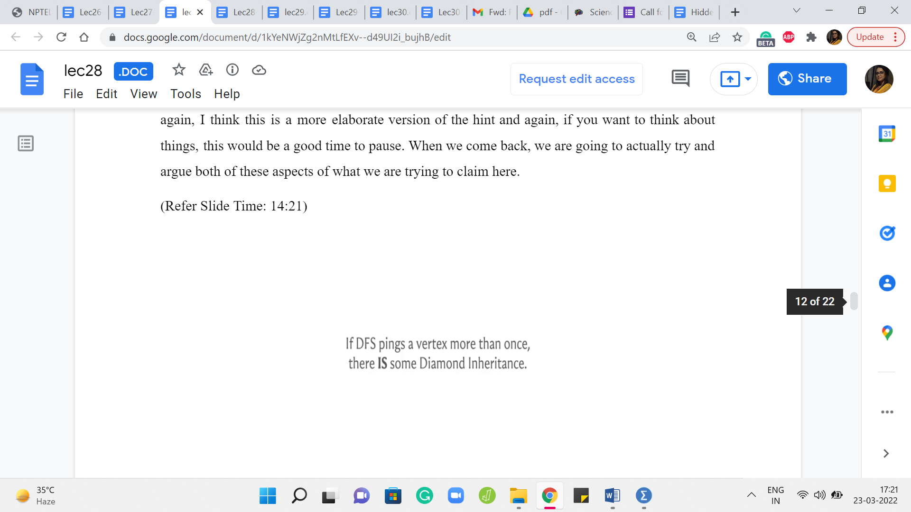 
Alright, so let us do this one step at a time. My first claim is that if the DFS traversal finds some vertex more than once, then there is in fact an instance of diamond inheritance somewhere in this graph. So let us see why. So, since we are considering a vertex that was visited by DFS more than once, let us just consider the scene when it is being visited the second time.
So, this means that it was already a visited vertex, and somebody is approaching it again through the DFS traversal. Of course, DFS will kind of ignore this, but we just want to detect this and see if there is something that we can conclude from here. So, let the red vertex denote the visited vertex and let the pink vertex denote the current vertex, which has essentially approached the visited vertex. And as I said in the original DFS implementation, DFS is just going to ignore this vertex and move on.
But we want to freeze time here and think about what happens. So, since the read vertex is a visited vertex, it must be the case that there was some path to this vertex from the source. That is why it was visited in the first place. So, we got here somehow, and this path could have been a more, it could have been a more tree-like structure in terms of how the actual traversal played out. But from whatever that structure was, you can extract a path that is fairly straightforward to check.
So, I leave that to you to, sort of, confirm offline. But basically, the point is that there is a path from the source vertex to the visited vertex. Now similarly, this is also true for the current vertex. The current vertex is just being visited. And therefore there is some path from the source vertex to the current vertex as well. Now, these paths may not be different in the sense of being completely disjoint.
So, for instance, this path could look something like this where there is some overlap with the path from the source vertex to the other visited vertex as you can see here. But because of what we have already argued, as long as we have two paths that are different, and we know these paths to be different because they at least differ on, for instance, the pink vertex and the vertex that is the parent of the red vertex. We know that these vertices cannot possibly be the same.
So, since these are two different paths from the source vertex, the vertex in blue to the visited vertex, which is the vertex in red, we know from our previous argument that we can from here actually derive a pair of paths, which are in fact completely internally disjoint. So, therefore, we do have an instance of diamond inheritance. So, that works.
(Refer Slide Time: 17:17)
 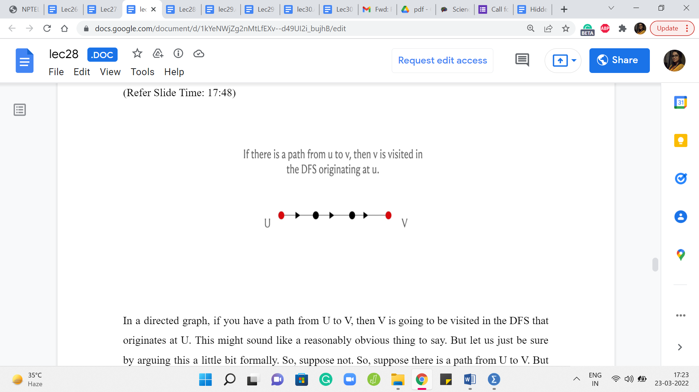
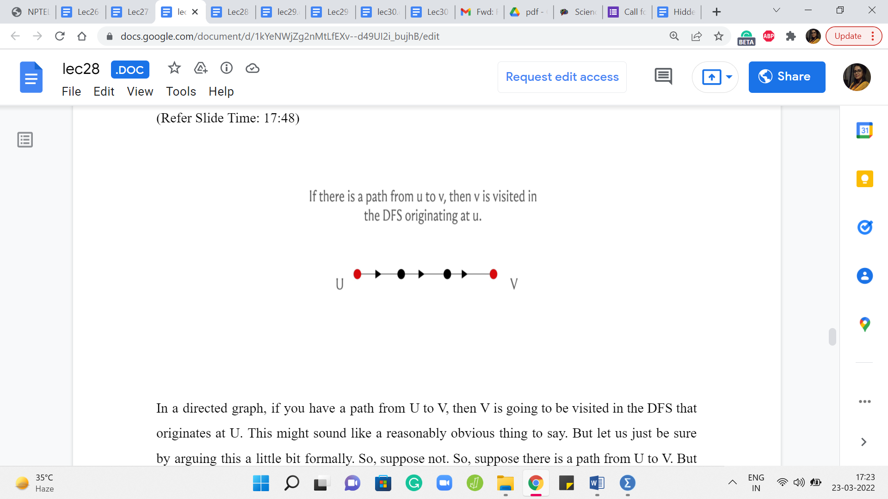
Now, is it true that if there is some instance of diamond inheritance somewhere, then there is some DFS, which is going to catch hold of it using this strategy that we have just described? So, in particular, we claim that if there is an instance of diamond inheritance between the vertices X and Y, then if we were to start a DFS from X, then this DFS traversal will, in fact, visit Y more than once for sure. So, to see this, let us prove an auxiliary fact first.
In a directed graph, if you have a path from U to V, then V is going to be visited in the DFS that originates at U. This might sound like a reasonably obvious thing to say. But let us just be sure by arguing this a little bit formally. So, suppose not. Right. So, suppose there is a path from U to V. But V is not a visited vertex in the DFS starting at U. Then, well, let us look at this path from U to V.
And let us identify the last vertex on this path that was visited. So, this is well defined, because U is definitely a visited vertex. That is where it all started. And let us just try and pinpoint the last vertex on this path that was visited. Well, whatever that last vertex is, it is not V because we are assuming that V was not visited for the sake of contradiction. So, that last vertex is lying somewhere in the middle of this path.
But now notice that the way DFS works is that it is going to approach every out neighbor of this vertex, which was presumably the last visited vertex on this path. And at that point, it would have certainly approached the vertex, which was the very next vertex on this path. And therefore the next vertex would have also been visited contradicting our choice of, you know, the last visited vertex. So, if this argument went by a little bit too quickly then there is a link in the description of this video, which has a write-up of the proof of this fact that every reachable vertex is in fact visited. And you could take a look at that as well. But why are we interested in this fact?
(Refer Slide Time: 19:29)

Well, remember, what we are given is the fact that there is some diamond inheritance between X and Y. And we want to argue that Y has been found twice by the DFS starting at X, at least twice. So, what does it mean that X and Y are witnessing diamond inheritance? It means because of what we showed earlier, we could just assume that there are two internally vertex disjoint paths between X and Y. So, here are these two paths, for example.
And now let us just look at the vertices that appear just before Y on these paths. Right. So, these are the two pink vertices. Notice that these two pink vertices are reachable from X, therefore they are going to be visited by the DFS traversal starting at X. But if they are visited, then whenever both of these vertices are visited at whatever times, they are going to try and approach Y. Now at this point, Y may or may not be a visited vertex. Let us say that the pink vertex is visited, let us say that the pink vertex that is on the top path is visited first.
And when it approaches Y, perhaps Y is not a visited vertex, or maybe it is being visited already, it does not really matter. The point is that because both of these pink vertices are visited vertices in the DFS traversal starting from X, both of them will witness at least one ping to Y. So, this proves the fact that if there is a diamond inheritance between X and Y, then for sure, you are going to approach Y more than once in the DFS traversal starting at X.
(Refer Slide Time: 21:08)
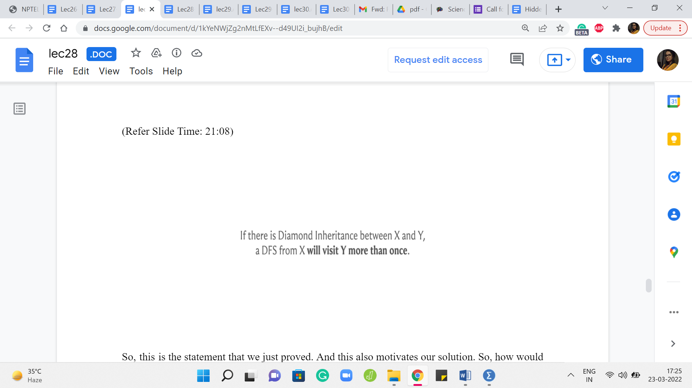 

So, this is the statement that we just proved. And this also motivates our solution. So, how would we basically take advantage of the facts that we have just shown and wrap it up in an algorithm that will help us identify diamond inheritance?
Well, what we could do is, essentially, guess all possible choices of X. We do not know where the diamond inheritance might originate. So, we simply try all possible vertices. But having fixated on a vertex, essentially, we run a DFS starting from that vertex and watch out for whether this event happens that some other vertex is approached twice, is reached twice, by the DFS traversal. It does not have to be exactly two times, of course, what is important is that it is reached more than once. That is what we want to watch out for.
And notice that this guessing of X is really required. You cannot just start a DFS at your favorite vertex and, you know, if this did not happen, no other vertex got approached more than once, you just call it a day and say that there is no diamond inheritance, that will not work. And I want to flag this and emphasize it because in our example, so far, it has basically not really mattered where we start our BFS or DFS, we just say started at some vertex and, you know, be done with it.
But here, you really have to initiate your DFS from every possible vertex. I mean, just to really emphasize that it would not work if you just started from your favorite vertex. Let us go back to the example that we had, where we did have diamond inheritance, this was one of the sample inputs. And now imagine starting your DFS at vertex 5, for instance. You are not going to be able to detect this diamond inheritance here, because the DFS from 5 will simply make no progress. There are no neighbors going out of 5, and therefore the DFS will really not do any work.
So, it is really important that you try every single vertex. But once you do that, everything that we have argued so far essentially amounts to proof of correctness for the approach that we are just proposing here. So, with all of that said, I think we are ready to take a look at the implementation.
(Refer Slide Time: 23:25)
 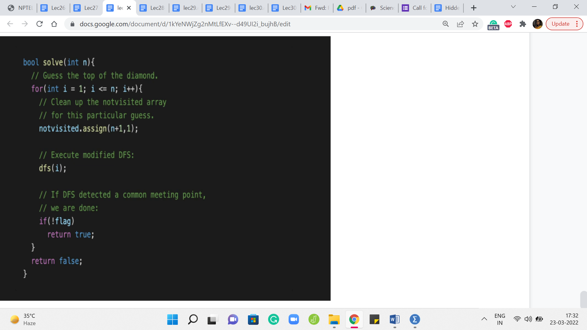
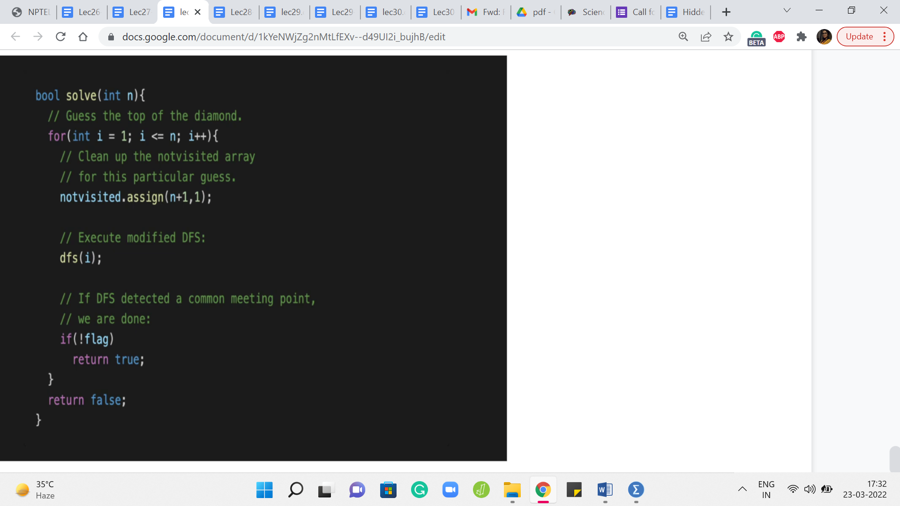
So, let us go to the standard DFS that we have. So, the first few lines are exactly identical to what we normally do. But what is new here is this else block where we say that look if this is not the first time that we are seeing you, then that means that we have found what we want. So, let us just return and let us make a note of this fact. And the way we do this is or at least the way that I have done it in this implementation is to change the status of a global flag variable.
So, we reset ‘flag’ to false, and then basically, this is the outer loop where we are guessing X, and we said that we will run a DFS starting at every vertex. So, that is the ‘for’ loop here right on the top. It is basically trying to run a DFS starting from ‘i’ with ‘i’ ranging from 1 to n. And of course, before you run DFS, make sure that you clean up your visited array so that it is all fresh and ready to use.
And when you come out of DFS, you just check the flag variable. If the flag variable has been set to false that means that you actually found an instance of diamond inheritance and you can return as much. You can say well yes, you did find diamond inheritance. But if this was never triggered, and you tried a DFS starting from every single vertex, then at that point, when you come out of the outer for loop, if you actually survived the whole thing, and you did not return control from inside the for loop, then outside the for loop, you can say, well, there is no diamond inheritance in this instance.
And you can say that with confidence because of everything that we have just argued. So, as usual, this being a Google Code Jam problem, the overall input is going to have a bunch of test cases. So, you want to be careful about remembering to reset your flag variable as you go from one test case to the next one.
Not doing this will obviously lead to inaccurate answers. And I am speaking from experience. So, make sure that you reset your flag variable properly. I am not showing you the part of the code that does the input-output because that is by now fairly routine. But if you want to take a look at the entire code that actually works, then you can find it in the usual place at the official repository for these lectures.
And once again, all of this code is in C++. So, if you are able to rewrite it in your favorite language, please do that. And please do submit a pull request. So, with that, we have come to an end of our exploration of applications of BFS DFS traversals. And I hope that you enjoyed this. A quick parting comment is in order. So, all the examples that we saw this week, I think by just looking at the problem statement, the graph formulation, basically, was really quite transparent.
In the problems of bipartiteness and covering you were literally given a graph as a part of the problem statement and you just had to work with that quite directly. And here, although there was some language with respect to classes, inheritance, and so on, it was really quite clear that this is screaming for a graph formulation. So, this was quite, quite evident. Sometimes the interesting thing about BFS DFS applications and with some of the other things that we will see in the weeks to come, interesting thing is that the graph formulation itself is not so obvious.
So, you might be given a problem with permutations, or there might be some random story about something that looks like it has nothing to do with graphs. And yet, the whole problem can be solved quite nicely by just finding the appropriate graph modeling. So, you will find a few practice problems in the extras section on the course website, which give you a couple of examples where I think the graph model is a little less obvious.
But since this was the first week that we were talking about graph algorithms, I felt that was okay to focus on problems where you do not have the additional burden of modeling a strange situation as a graph. That does require some imagination and creativity. And we will have plenty of opportunities to see that play out as we go over examples in the coming weeks. So, I hope that you are all excited to be doing more problems based on graphs and I hope that you had a good time with BFS and DFS.
So, please let us know what you thought through either the comments on this YouTube video or by letting us know on the Discord community. You could join the conversation there or on the Google Groups mailing list, especially if you are watching this during the active run of a course. Thank you very much, and we will see you back next week. Bye for now!